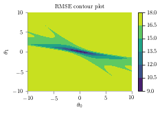
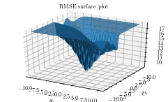
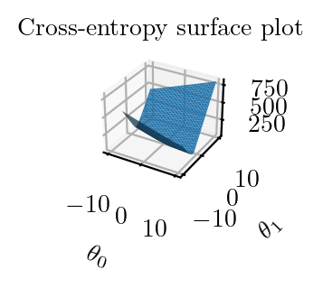
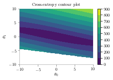
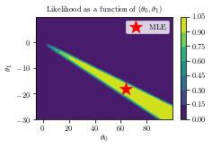

import numpy as np
import matplotlib.pyplot as plt
%matplotlib inline
from latexify import *
# Matplotlib retina
%config InlineBackend.figure_format = 'retina'Logistic Regression - Cost Function
ML

X = np.array([
[1],
[2],
[3],
[4],
[5],
[6]
])
y = np.array([1, 1, 1, 0, 0, 0])from sklearn.linear_model import LogisticRegressionlr = LogisticRegression(penalty='none',solver='newton-cg')lr.fit(X, y)LogisticRegression(penalty='none', solver='newton-cg')In a Jupyter environment, please rerun this cell to show the HTML representation or trust the notebook.
On GitHub, the HTML representation is unable to render, please try loading this page with nbviewer.org.
LogisticRegression(penalty='none', solver='newton-cg')
lr.coef_array([[-18.33148189]])lr.intercept_array([64.11147504])def sigmoid(z):
return 1/(1+np.exp(z))theta_0_li, theta_1_li = np.meshgrid(np.linspace(-10, 10, 200), np.linspace(-10, 10, 200))def cost_rmse(theta_0, theta_1):
y_hat = sigmoid(theta_0 + theta_1*X)
err = np.sum((y-y_hat)**2)
return errz = np.zeros((len(theta_0_li), len(theta_0_li)))
for i in range(len(theta_0_li)):
for j in range(len(theta_0_li)):
z[i, j] = cost_rmse(theta_0_li[i, j], theta_1_li[i, j])latexify()
plt.contourf(theta_0_li, theta_1_li, z)
plt.xlabel(r'$\theta_0$')
plt.ylabel(r'$\theta_1$')
plt.colorbar()
plt.title('RMSE contour plot')
format_axes(plt.gca())
plt.savefig("../figures/logistic-regression/logistic-sse-loss-contour.pdf", bbox_inches="tight", transparent=True)
import matplotlib.pyplot as plt
from mpl_toolkits.mplot3d import Axes3D
latexify()
fig = plt.figure()
ax = fig.add_subplot(111, projection='3d')
ax.plot_surface(theta_0_li, theta_1_li, z)
ax.set_title('RMSE surface plot')
ax.set_xlabel(r'$\theta_0$')
ax.set_ylabel(r'$\theta_1$')
plt.tight_layout()
plt.savefig("../figures/logistic-regression/logistic-sse-loss-3d.pdf", bbox_inches="tight", transparent=True)
import pandas as pdpd.DataFrame(z).min().min()9.01794626038055def cost_2(theta_0, theta_1):
y_hat = sigmoid(theta_0 + theta_1*X)
err = -np.sum((y*np.log(y_hat) + (1-y)*np.log(1-y_hat)))
return errz2 = np.zeros((len(theta_0_li), len(theta_0_li)))
for i in range(len(theta_0_li)):
for j in range(len(theta_0_li)):
z2[i, j] = cost_2(theta_0_li[i, j], theta_1_li[i, j])import matplotlib.pyplot as plt
from mpl_toolkits.mplot3d import Axes3D
latexify()
fig = plt.figure()
ax = fig.add_subplot(111, projection='3d')
ax.plot_surface(theta_0_li, theta_1_li, z2)
ax.set_title('Cross-entropy surface plot')
ax.set_xlabel(r'$\theta_0$')
ax.set_ylabel(r'$\theta_1$')
plt.tight_layout()
plt.savefig("../figures/logistic-regression/logistic-cross-loss-surface.pdf", bbox_inches="tight", transparent=True)
latexify()
plt.contourf(theta_0_li, theta_1_li, z2)
plt.title('Cross-entropy contour plot')
plt.colorbar()
plt.xlabel(r'$\theta_0$')
plt.ylabel(r'$\theta_1$')
format_axes(plt.gca())
plt.savefig("../figures/logistic-regression/logistic-cross-loss-contour.pdf", bbox_inches="tight", transparent=True)
y.shape, y_bar.shape((6,), (10000,))y = 0
y_bar = np.linspace(0, 1.1, 10000)
plt.plot(y_bar, -y*np.log(y_bar) - (1-y)*np.log(1-y_bar))
format_axes(plt.gca())
plt.ylabel("Cost when y = 0")
plt.xlabel(r'$\hat{y}$')
plt.savefig("../figures/logistic-regression/logistic-cross-cost-0.pdf", bbox_inches="tight", transparent=True)
y = 1
y_bar = np.linspace(0, 1.1, 10000)
plt.plot(y_bar, -y*np.log(y_bar) - (1-y)*np.log(1-y_bar))
format_axes(plt.gca())
plt.ylabel("Cost when y = 1")
plt.xlabel(r'$\hat{y}$')
plt.savefig("../figures/logistic-regression/logistic-cross-cost-1.pdf", bbox_inches="tight", transparent=True)
Likelihood
X_with_one = np.hstack((np.ones_like(X), X))
\[\begin{align*} P(y | X, \theta) &= \prod_{i=1}^{n} P(y_{i} | x_{i}, \theta) \\ &= \prod_{i=1}^{n} \Big\{\frac{1}{1 + e^{-x_{i}^{T}\theta}}\Big\}^{y_{i}}\Big\{1 - \frac{1}{1 + e^{-x_{i}^{T}\theta}}\Big\}^{1 - y_{i}} \\ \end{align*}\]
X_with_one[1]array([1, 2])def likelihood(theta_0, theta_1):
s = 1
for i in range(len(X)):
y_i_hat = sigmoid(-X_with_one[i]@np.array([theta_0, theta_1]))
s = s* ((y_i_hat**y[i])*(1-y_i_hat)**(1-y[i]))
return s
x_grid_2, y_grid_2 = np.mgrid[-5:100:0.5, -30:10:.1]
li = np.zeros_like(x_grid_2)
for i in range(x_grid_2.shape[0]):
for j in range(x_grid_2.shape[1]):
li[i, j] = likelihood(x_grid_2[i, j], y_grid_2[i, j])
plt.contourf(x_grid_2, y_grid_2, li)
#plt.gca().set_aspect('equal')
plt.xlabel(r"$\theta_0$")
plt.ylabel(r"$\theta_1$")
plt.colorbar()
plt.scatter(lr.intercept_[0], lr.coef_[0], s=200, marker='*', color='r', label='MLE')
plt.title(r"Likelihood as a function of ($\theta_0, \theta_1$)")
#plt.gca().set_aspect('equal')
plt.legend()
plt.savefig("../figures/logistic-regression/logistic-likelihood.pdf", bbox_inches="tight", transparent=True)